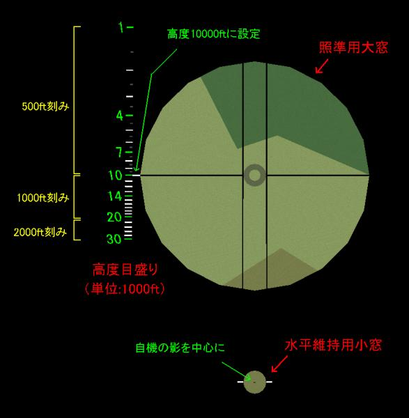

P1Y1"銀河"説明書
目次
１、各機能等解説
１−１、急降下爆撃用照準器視点
１−２、偵察員視点
１−３、水平爆撃用照準器視点
１−４、他動作設定
１−５、800kg爆弾
１−６、同梱のCOM機用機体について
２、水平爆撃用照準器の解説
２−１、機能
２−２、各部名称
２−３、照準操作
２−４、オートパイロットを併用した爆撃手順
２−５、補足
３、参考情報
４、諸注意
１、各機能等解説
コックピット視点キー（デフォルトF1）を連打することによって視点を切り替えることができます。
１−１、急降下爆撃用照準器視点
爆弾倉扉キー（デフォルト１）によって急降下爆撃用照準器が起動します。
１−２、偵察員視点
機首偵察員の視点です。20mm機銃を操作することができます。（後述のCOM機用機体は操作不可）
１−３、水平爆撃用照準器視点
爆弾倉扉キー（デフォルト１）によって水平爆撃用照準器が起動します。
１−４、他動作設定
・推力偏向キー（デフォルトPage Down/Page Up）：爆弾倉扉及び後部カバー取り外し（魚雷搭載時の外観）
・逆噴射キー（デフォルト"."）：通信員が後部機銃の射撃体勢となります。
１−５、800kg爆弾
武装選択において外部燃料タンクを選択すると、800kg爆弾を搭載します（後述のCOM機用機体は搭載不可）。
威力は最大で500lb爆弾３発分となります。投下された外部タンクが、残留燃料量に応じた威力で爆発することを利用した武装です。
800kg爆弾を搭載している間は、アフターバーナーをオンにして飛行することを推奨します。
アフターバーナーがオンの間は、燃料消費量がゼロになるよう設定しており、爆弾内の燃料を消費して威力が下がることを防ぎます。
又、このとき両翼下に外部タンクが出現し、両翼下タンクの燃料を使って飛んでいるという設定になります。
１−６、同梱のCOM機用機体について
通常用機体"P1Y1_GINGA"は、プロペラ機にアフターバーナーをつけていることが原因で、
基地防空ミッションで敵機として出現したとき、スロットルが０で固まるというバグが発生します。
そこで通常用機体のカテゴリを「汎用」として出現を防ぐとともに、アフターバーナーを無効としたCOM機用機体を同梱しました。
通常用機体："P1Y1_GINGA"/AB可/800kg爆弾搭載可/機首機銃手動発砲/カテゴリ「汎用」
COM機用機体："P1Y1_GINGA(COM)"/AB不可/800kg爆弾搭載不可/機首機銃自動発砲/カテゴリ「第二次大戦急降下爆撃機」
２、水平爆撃用照準器の解説
２−１、機能
機体が「水平・直線飛行」をしているという条件のもと、次の情報から着弾位置を予想するのが、この照準器の機能となります。
・機体速度情報（自動的に入力される）
・機体高度情報（操縦席計器からパイロットが得る）
水平・直線飛行とは、機体の高度が一定に保たれ、旋回も横滑りもしていない状態です。手動でも行えますが、オートパイロットを使うのが無難です。
高度情報は、(機体高度-爆撃目標の高度)の値がより適切ですが、以下では簡素化のため、目標高度を0mとして解説しています。
２−２、各部名称

２−３、照準操作
１、回転銃（ジョイスティックの方はマウス、マウスで操縦の方はカーソルキー）を左右に動かし、水平維持用小窓に自機の機体の影を合わせる。
２、回転銃を上下に動かし、照準用大窓を現在の機体高度の目盛りに合わせる。
３、照準用大窓の中心が着弾予想地点となる。
２−４、オートパイロットを併用した爆撃手順
１、武装選択及び爆弾倉扉開
800kg爆弾の場合でも、水平爆撃用照準器を起動するため、爆弾倉扉を開いて下さい。
２、HEADING BUGを前方に合わせる
VOR選択メニュー（デフォルトL）を４回押すと「HEADING BUG」が選択されます。
更にVOR回転キー（デフォルト７、８）を押すと、操縦席右下のHSIにあるHEADING BUGが回転します。
この目印はオートパイロットに進行方向を指示するものなので、起動直後にあらぬ方向に旋回しないよう、前方に持ってきて下さい。
３、高度調整
正確な照準のためには、照準器の目盛りに存在する高度に、機体高度を合わせると良いです。
高度目盛りの中から現在高度に近いものを選んだ上で、機体高度をそれに合わせるように操縦して下さい。
４、オートパイロット起動
自動操縦メニューを開きます。（デフォルトBackSpaceキー）
機体高度が目標高度に合ったタイミングで、「５」キー（Fly Heading Bug）を押すと、オートパイロットがその高度を維持します。
５、目標への誘導
HEADING BUGを回転させることにより、機体を目標へ誘導します。
普通はまず偵察員視点で誘導し、ある程度接近したら水平爆撃用照準器視点に切り替えます。
６、照準・投下
前述の照準操作の解説を参考に照準し、大窓中央の円が目標に達した瞬間を狙って投下します。
２−５、補足
○水平維持用小窓について
その名の通り、中央に自機の影をおくことにより、照準器を水平に保つ役割をします。
高度等によっては影を視認できないこともありますが、そんなときは、サブウィンドウをターゲットビューにし、武装を一時的にGUNにすると見えるかも？
○ジョイスティックが使用できず、回転銃操作にキーボードを使っている方へ
両窓の微妙な調整がやりにくいと思いますが、このページが助けになるかもしれません。
３、参考情報
○塗装
・機体塗装：第七六二海軍航空隊
○武装外観
・魚雷：九一式魚雷
・60kg爆弾：九九式六番陸用爆弾
・250kg爆弾：九九式二五番通常爆弾
・800kg爆弾：八〇番通常爆弾一型
・偵察員席機銃：九九式二〇粍一号機銃（旋回機銃型）
・通信員席機銃：二式十三粍旋回機銃
※60kg爆弾は、搭載可能だったのとの資料があるものの、実戦使用の記録はありません。
○水平爆撃照準器
・設計に用いた重力加速度は9.787m/s2、使用限界速度は400kt。
○800kg爆弾搭載時に離陸可能とするためのdat設定
爆発威力150となる外部燃料タンクの総重量は、(800kg+実機の両翼下増槽の想定重量(燃料含))のおよそ6.5倍となります。
このことから、PROPELLR/WEIGHCLN/WEIGFUEL/WEIGLOAD/FUELMILIの値を、全て想定実機の6.5倍に設定しています。
500lb爆弾等の相対重量は低下しますが、その点以外は（体感レベルで）想定実機と同等の性能となっています。
４、諸注意
１、当アドオンは、OCP収録機体の改造版です。又、その機体はhistorical pack収録機体の改造版です。
２、魚雷の外観は、OCP収録機体から流用し改造したものです。
３、当アドオンの再配布及び改造版の配布等は自由ですが、その際は添付した説明書等に元アドオン名を明記すること。原作者への連絡は不要です。
４、当アドオンについて、YSFlightの開発者である山川氏に問い合わせることは絶対にお止め下さい。